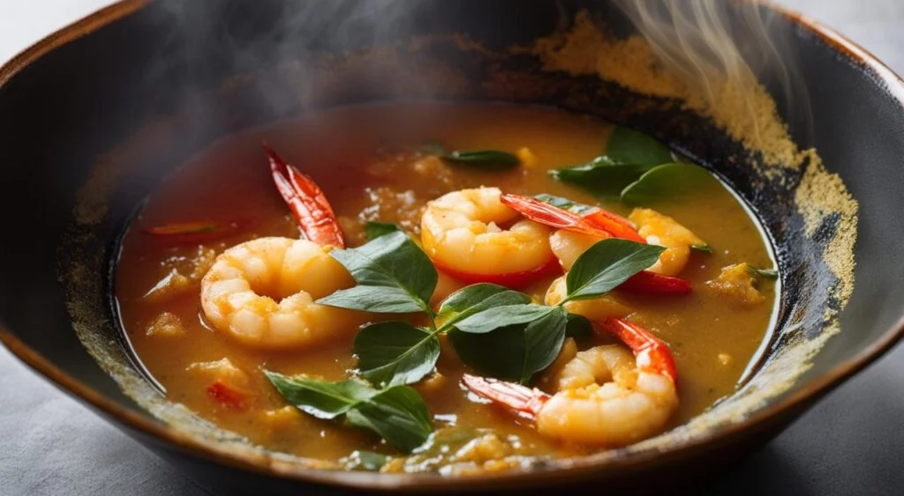

Tacacá

A historia do tacacá, tem origem índigena, chamado mani poi.
Esse caldo é descrito pelo missionário Claude D'Abbeville, que conviveu com populaçoẽs indígenas no século 17.
Ingredientes
2 litros de tucupi
500 gramas de camarão salgado (seco)
½ xícara de goma de mandioca
4 unidades de pimenta de cheiro
2 maços de jambu
4 folhas de chicória
colher de chá de sal
Pimenta do reino a gosto
Modo de preparo
Ferva o tucupi com alho e Chicória e tempere com um pouco de sal,
separe limpe o jambu e cozinhe em água com um pouco de sal cozinhe por 10 minutos, escorra o jambu e reserve
Coloque 2 litros de água no fogo e tempere com alho, Chicória e sal a gosto
quando começar a ferver dissolva em um pouco de água a goma
e coloque aos poucos batendo firme com uma colher de pau até ficar com uma consistência cremosa
Dessalgue o camarão colocado de molho por 3 horas para tirar o excesso de sal
empre trocando a água, em uma cuia coloque um pouco de tucupi, em cima coloque a goma,
um pouco de jambu e os camarões, depois acrescente mais um pouco de tucupi, se quiser pimenta, coloque um pouco e sirva quente.
E o seu Tacacá está pronto, espero ter ajudado.